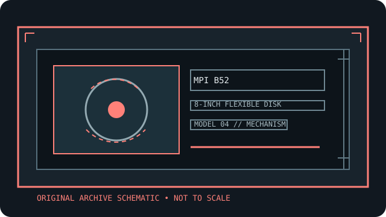

[ INDIVIDUAL COMPONENT // FLOPPY DRIVES ]
MPI B52 8-inch flexible disk drive
This record identifies a real, model-specific 8-inch diskette mechanism. Format capacity and host fit depend on the documented revision, interface options, controller, recording mode, and media; values are not inferred from form factor alone.

IDENTIFICATION NOTE: MPI B52 is a bare mechanism/drive model, not a generic PC floppy peripheral. Match the full label, PCB revision, connector and voltage configuration to the cited manual before connecting or servicing it.
Model specifications
| Catalog subcategory | 8-inch floppy mechanisms |
|---|---|
| Exact model / family | MPI B52 8-inch flexible disk drive |
| Disk format and capacity | 8-inch flexible disk drive; consult the B51/B52 manual’s separate model/density tables for the exact B52 configuration. Single-/double-density and the drive’s number of usable surfaces affect formatted capacity; capacity is not a media-size constant. |
| Host interface | Dedicated MPI signal connector and DC power connector are defined in the B51/B52 OEM manual. Verify J1/J2 wiring against the correct B52 drawing and connector keying. |
| Data rate | Use the manual’s recording-mode data-transfer-rate entry for the B52 and selected FM/MFM density. Set controller clocking accordingly; do not assume the rate used by a later 8-inch mechanism. |
| Drive select / jumpers | Drive Select 1–4 and programmable shunt options are documented for the MPI mechanism. Set a unique select number and verify head-load and termination options against the B52 PCB revision. |
| Dimensions / mounting | Use the manual outline/mounting drawing for B52 height, width, depth, and mounting clearances. Check actual frame revision and unit orientation rather than relying on a family-level estimate. |
| Power requirements | Dedicated +5 VDC and +12 VDC are provided at the specified DC connector. Confirm current limits and pin assignment in the manual before applying power; the connector is not a keyed modern PC power plug. |
| Controller / host compatibility | Requires an 8-inch-capable controller that matches MPI signals, density, data timing, and selected format. Use the manual’s supported-host wiring and drive-select scheme; physical fit alone is insufficient. |
Model-specific compatibility checks
- Record the complete model suffix, serial/date code, board revision, connector keying, and all drive-select or option links before installation.
- Confirm controller signaling, line termination, host drive-select assignment, recording density, sector geometry, and the manual’s power connector pinout as a single compatible configuration.
- Do not connect by connector shape alone. An 8-inch drive may require non-PC signal conventions, additional DC rails, or a mains-rated supply; follow the model documentation.
Preservation and safety notes
Keep the B52-specific manual with the unit and log its shunts, host, and media. Avoid powered servicing, indiscriminate head cleaning, and writes to original disks; image and checksum preservation copies before conversion.
For archival work, preserve original media in its native format, make a verified read-only acquisition first, checksum retained copies, and log the drive, controller, software, media condition, and any service or conversion performed.
Manufacturer manuals & archive sources
- MPI B51/B52 Flexible Disk Drive Product Manual (Internet Archive)OEM product manual with model-specific performance, interface, dimensions, power, and installation details.
- MPI B51/B52 Product Manual, alternate archival catalog recordAlternate archival record of the MPI 51/52 manual; verify the manual revision for this B52.
Consult the exact model/revision manual before applying electrical or service values. Family references are useful only where their coverage matches the marked unit.